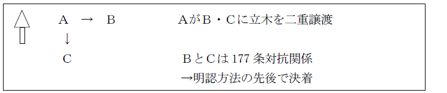
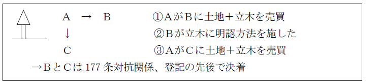
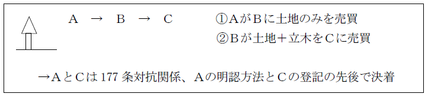
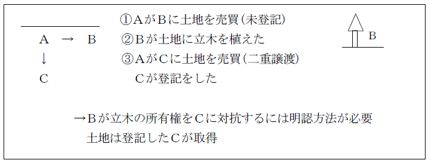

第２編 物権
第１章 総論
第３節 物権変動
Ⅳ 動産物権変動－178条論
4. 盗品・遺失物に関する特則－即時取得の制限
目的物が原権利者の意思に反し、又は意思によらずその占有を離れた盗品・遺失物である場合に、原権利者の保護を図り、２年間は取戻しを可能とする。
(1) 「盗品又は遺失物」
所有者の意思によらないで占有を失った場合に限り適用される。
詐欺・恐喝・横領の場合には適用なし（瑕疵はあるが意思に基づくので）。
(2) 原権利者の回復請求権
盗難又は遺失の時から２年間（除斥期間・通説）、原則として無償で回復請求できる（193条）。ただし、例外的に194条により代価を弁償する場合がある。
(a) 回復請求権者
「被害者又は遺失者」
原所有者が回復請求できることはもちろん、賃借人・受寄者も請求できる。
質権者は回復請求できない。占有回収の訴えによることになる（353条）。
(b) 相手方
現に占有している者である。
即時取得者からの特定承継人も含む（判例・通説）。
目的物が変形されたり、相手方の手中にないときには、返還請求権もなく、物に代わる損害賠償の請求もできない（最判昭26.11.27）。
(c) 所有権の帰属
Ｑ 回復請求をすることができる期間、動産の所有権は原所有者・即時取得者のいずれに属するか。
Ａ 原所有者説（大判昭４.12.11）
回復請求をすることができる期間、その動産の所有権は原所有者に帰属する。
（理由）
「回復」とは、占有の回復の意味である。
Ｂ 即時取得者説
即時取得（192条）の原則を重視して、即時取得者にあるとする。
（理由）
「回復」とは、所有権の回復を意味する。
(3) 代価の弁償（194条）
(a) 意義
占有者が競売、公の市場、又は目的物と同種の物を販売する商人から買い受けた場合、回復者は、占有者が支払った代価を弁償しなければ、回復請求できない。
一般の動産譲渡の場合に比べ、はるかにその取引安全を保護する必要があるからである。
(b) 代価弁償の返還時期
Ｑ 物の返還後も代価弁償を請求できるか。
→ 肯定説（最判平12.６.27）
（理由）
①占有者の保護という194条の立法趣旨。
②194条を取得者に抗弁を認めただけの規定とすると、盗品だと言われて素直にこれを原所有者に引き渡した者が代価の弁償を受けられず、かえってどこまでも返還を拒んだ者が弁償を受けることができるという不均衡が生じる。
(4) 使用利益の返還
Ｑ 194条に基づき盗品等の引渡しを拒むことができる占有者は、使用利益の返還義務を負わないか。
→ 使用収益の返還義務を負わない。（最判平12.６.27）
＜判例＞ 最判平12.６.27
・判旨
「盗品又は遺失物（以下『盗品等』という。）の被害者又は遺失主（以下『被害者等』という。）が盗品等の占有者に対してその物の回復を求めたのに対し、占有者が民法194条に基づき支払った代価の弁償があるまで盗品等の引渡しを拒むことができる場合には、占有者は、右弁償の提供があるまで盗品等の使用収益を行う権限を有すると解するのが相当である。」
Ⅴ 明認方法
：権利の所在を公示する方法で、慣習上、対抗要件としての効力を認められてきたもの
1. 明認方法の対象
① 立木法の適用を受けない立木
② 未分離の果実－蜜柑、桑葉、稲立毛
③ 温泉権
2. 具体的方法
① 第三者をして権利取得の事実を明らかにするに適する方法で足りる。
② 明認方法は、第三者が利害関係を取得した当時にも存在するものでなけ れば、対抗力は認められない（最判昭36.5.4）。
1. 立木のみの二重譲渡

2. 土地とともに立木が売買された場合

→ 立木の生育する土地を取得した場合、立木は土地の一部であるから、対抗要件は土地の登記であり、明認方法のみを施しても第三者に対抗できない（大判昭９.12.28）。
3. 立木の所有権留保

→ 立木を原則として土地の構成部分であると解すると、この問題は、対抗問題として処理されることになる。従って、Ａは、明認方法を施さない限り、立木所有権の留保をＣに対抗できない（最判昭34.８.７）。
4. 立木を植栽した場合

→ まず、Ｂは「権原」に基づいて当該土地に立木を植栽したといえるので、242条ただし書を類推し、当該立木は当該土地に付合せず、立木はＢの所有権の独立の客体になり得る。しかし、取引の安全のため、Ｂが当該立木の所有権を第三者に主張するには、対抗要件、すなわち、少なくとも明認方法を施すことを要する。よって、当該立木の所有権の帰属は、Ｂによる立木についての明認方法とＣによる甲土地の所有権移転登記の先後により決せられることになる（最判昭35.３.１）。
5. 立木を伐採した場合、伐木の所有権を対抗することができるか。
Ｑ Ａ所有の立木がＢとＣとに二重譲渡され、後にこれが伐採された場合、当該伐木はＢＣのいずれに帰属するか。
ＢＣともに明認方法を施していない場合、互いに立木所有権について相手方に対して所有権を主張できないことから、伐木についてどう考えるか問題となる。
→ ＢＣ共に伐木の所有権を対抗できない（最判昭33.７.29）
「立木当時既に明認方法の欠缺を主張する正当な利益を有していた第三者に対する関係においては、（伐木等を自ら占有すると否とに拘らず）伐木等の所有権を以て対抗し得ない」とする。
Ⅵ 物権の消滅
物権一般に共通する消滅原因には、以下のものがある。
1. 所有権以外の物権は20年間の消滅時効にかかる（166条２項）。
2. 抵当権は、債務者･設定者との関係ではその担保する債権と同時でなければ時効によって消滅しない（396条）。
混同：併存させておく必要のない２個の法律上の地位が同一人に帰属することにより、一方が消滅すること
1. 所有権と制限物権の混同（179条１項）
ex. 地上権者が土地の所有権を取得した場合には、地上権は消滅する（179条１項本文）。
例外－以下の場合には混同により消滅しない（179条１項ただし書）。
①制限物権が第三者の権利の目的となっている場合
②物権の目的物が第三者の権利の目的となっている場合
③自己借地権
借地借家法は、借地権（建物所有を目的とする地上権又は土地の賃借権。借地借家法２条１号）を設定する場合において、「他の者と共に有することとなるときに限り」、自己借地権を設定できるとする（借地借家法15条１項）。また、借地権が、借地権設定者に帰した場合であっても、「他の者と共にその借地権を有するときは」、借地権は消滅しないとする（借地借家法15条２項）。
2. 制限物権とこれを目的とする物権の混同（179条２項）
ex. 地上権者が地上権を目的として設定されている抵当権を取得した場合には、当該抵当権は消滅する（179条２項前段）。
例外－以下の場合には混同により消滅しない（179条２項後段、１項ただし書）。
①制限物権が第三者の権利の目的となっている場合
②混同すべき物権の目的物が第三者の権利の目的となっている場合
：権利を消滅させることを目的とする単独行為